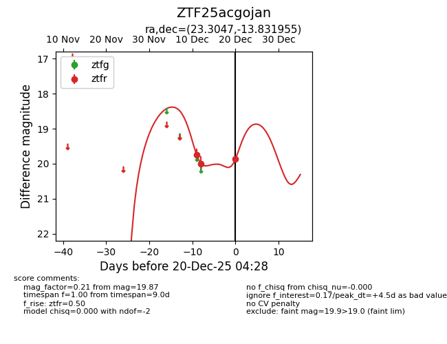
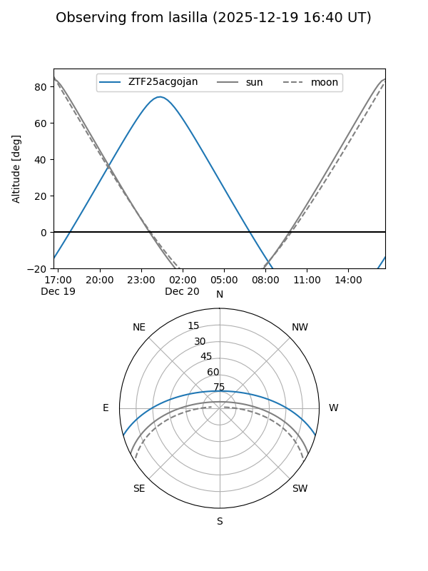
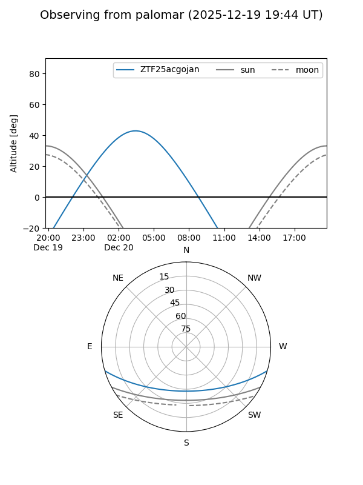
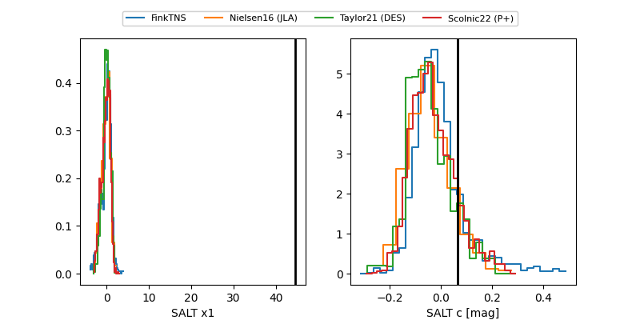

ZTF25acgojan
Target ZTF25acgojan at 2025-12-20 04:29
Aliases and brokers:
FINK: fink-portal.org/ZTF25acgojan
Lasair: lasair-ztf.lsst.ac.uk/objects/ZTF25acgojan
ALeRCE: alerce.online/object/ZTF25acgojan
alt names
ZTF25acgojan (ztf,fink_ztf)
Coordinates:
equatorial (ra, dec) = 23.3047,-13.83195
equatorial (HMS+DMS) = 01:33:13.12,-13:49:55.04
galactic (l, b) = (161.2635,-73.51081)
Flags:
Photometry:
last ztfr=19.87
3 ztfr detections
Lightcurve

Visibility


Additional plots
